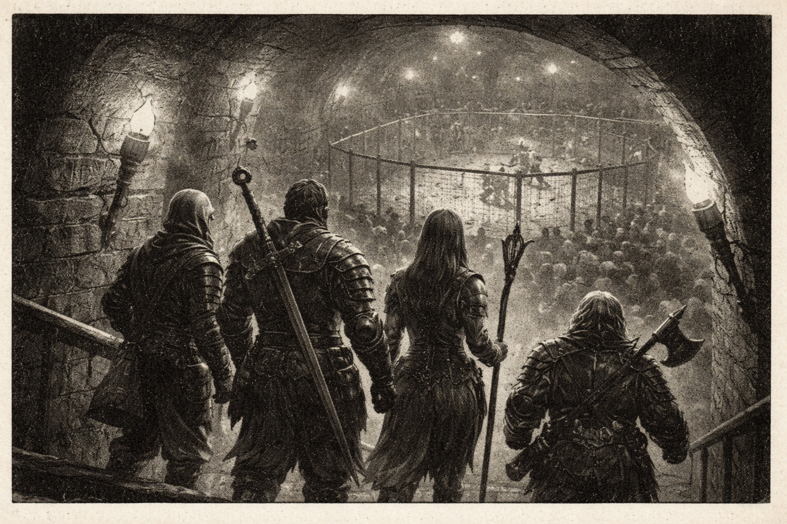

<
Gugalanna Games Show Early Signs of Guild Conflicts

By Sam Sabula
02-26-26
The long-awaited Gugalanna Games sounded off with a bang this week, marking the dawn of Hold’s newest political era with a rowdy yet well-earned show of friendly competition.
The gathering was notable not just for its political significance or its spectacle, though: the Games served as an opportune recruiting venue for a number of burgeoning guilds opening their doors to aspiring new members, with each guild spearheaded by ideals of integrity, perseverance, and knowledge.
However, despite the Games’ overtures of brotherhood, reports have already surfaced of foul play betwixt the seminal guilds.
Several members of the controversy-inspiring "Final Tally" guild - specializing in cooperation with the undead - claim to have been administered poison by a group of rival adventurers in a ploy to sabotage their performance in the Games.
One ghostly secretary at the Necrohold reports:
"one of [the perpetrators] was this huge, glowing paladin guy; a total meathead, too. He kept shouting 'Hello' all cheerily and shining his awful lighted shield at my poor clerks!
He was so clueless that if it wasn’t for the poisonings, I would’ve thought he had wandered in here entirely by accident!
Really, the whole thing would’ve been hilarious if it hadn’t been so harrowing."
The paladin in question has since been blacklisted from the guild hall.
It remains unclear if he even knew what "the fancy piece of paper" he was signing was.
The six victims of the poisoning also report seeing the same character alongside four other accomplices, who they say claimed to be on an errand from Necromancer Skrix, guildmaster of The Final Tally.
This party managed to charm the combatants’ leader, who then convinced the rest of his gang that Skrix "must have good reason to have us drink this mysterious liquid before the fight."
"There’s no way I didn’t spot whatever they did," one furious rogue said; "they must have used some Subtle Spell or something!"
Furthermore, it appears that the above-mentioned paladin and his crew even convinced the guild members to give them skill training before they left, which only serves to worsen the bitter taste in the mouths of the duped.
With such flagrant disregard for the spirit of the competition, the questions on everyone's minds are clear: what (or who) could have motivated these agents to such foul play?
Is this an isolated incident, or merely a prelude to another bitter conflict?
And, what might this mean for the stability of the Consulate?
Only time (and your trusty friends here at the Chronicle) will tell!
